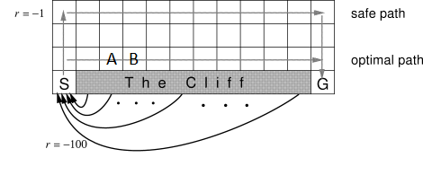
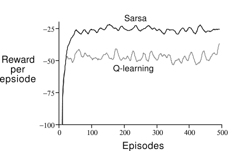

Model-free Reinforcement Learning¶
Learning Outcomes
Identify situations in which model-free reinforcement learning is a suitable solution for an MDP
Explain how model-free planning differs from model-based planning
Apply Q-learning and SARSA to solve small-scale MDP problems manually and program Q-learning and SARSA algorithms to solve medium-scale MDP problems automatically
Compare and contrast off-policy reinforcement learning with on-policy reinforcement learning
Model-based vs model-free¶
Value iteration is part of a class of solutions known as model-based techniques. This means that we need to know the model; in particular, we have access to \(P_a(s' \mid s)\) and \(r(s,a,s')\).
In this section, we look at Q-learning and SARSA, which are model-free techniques. This means that we do NOT know the \(P_a(s' \mid s)\) and \(r(s,a,s')\).
*How can we calculate a policy if we don’t know the transitions and the rewards?!*We learn through experience by trying actions and seeing what the results is, making this machine learning problem.
Importantly, in model-free reinforcement learning, we do NOT try to learn \(P_a(s' \mid s)\) or \(r(s,a,s')\) — we learn a value function or a policy directly.
There is something in between model-based and model-free: simulation-based techniques. In these cases, we have a model as a simulator, so we can simulate \(P_a(s' \mid s)\) and \(r(s,a,s')\) and learn a policy with a model-free technique, but we cannot “see” \(P_a(s' \mid s)\) and \(r(s,a,s')\), so model-based techniques like value iteration are not possible.
Exercise – The Mystery game
Consider the following game, implemented by Github user guiferviz, and available for download at https://github.com/guiferviz/rl_udacity/.
The aim of the game is to win the game. You have six actions available, which can be executed by pressing keys 1, 2, 3, 4, 5, and 6. You need to learn what the actions do and what the rewards are. No other instructions are given, but you will know when you receive any rewards/points. Try to play the game and see if you can win. Have fun!
Once you have played this, ask yourself the following questions:
What was the process you took?
What did you learn?
What assumptions did you use?
I would guess that you experimented by pressing the keys 1 to 6, from the outcome of the keys, you learnt the effect of each of the keys, including the state transitions and the rewards. From this, you could easily construct a winning strategy. I also would guess that you perhaps used the colours as a way to guess what you should do.
This game is of interest because it is a model-free (at least initially) Markov decision process: you didn’t know the transition function or the reward function; instead you had to learn it. Similarly, model-free reinforcement learning techniques don’t know the transition function or the reward function of an MDP, so they just learn by trying different behaviours and observing what rewards they get. Over time, they learn which behaviours lead to positive rewards, so they reinforce the policy to try that behaviour more, and which behaviours lead to negative rewards, and they reinforce the policy to avoid that behaviour.
Imagine how hard it is for a computer that doesn’t have any assumptions or intuition for this game though! It will not match the colours, nor will it really have any prior knowledge about similar games, unless it is explicitly told about it. Model-free reinforcement learning techniques start with no or minimal initial knowledge, and will learn a policy (e.g. a value function, a Q-function, or a policy directly) just by trying behaviours and seeing what happens. Most techniques (at least the ones covered in these notes) do not learn a model in the same way that you did — they just construct the policy directly.
Intuition of model-free reinforcement learning¶
Reinforcement Learning: There are many different techniques for model-free reinforcement learning, all with the same basis:
We execute many different episodes of the problem we want to solve, and from that we learnt a policy.
During learning, we try to learn the value of applying particular actions in particular states.
During each episode, we need to execute some actions. After each action, we get a reward (which may be 0) and we can see the new state.
From this, we reinforce our estimates of applying the previous action in the previous state.
We terminate when: (1) we run out of training time; (2) we think our policy has converged to the optimal policy (for each new episode we see no improvement); or (3) our policy is ‘good enough’ (for each new episode we see minimal improvement).
Q-Learning: Off-policy Reinforcement Learning¶
Q-Learning is perhaps the simplest of reinforcement learning methods, and is based on how animals learn from their environment. The intuition is quite straightforward. Maintain a Q-function that records \(Q(s,a)\) for every state-action pair. At each step: (1) choose an action using a multi-armed bandit algorithm; (2) apply that action and receive the reward; and (3) update \(Q(s,a)\) based on that reward. Repeat over a number of episodes until …when?
Algorithm – Q-learning
Input: MDP \(M = \langle S, s_0, A, P_a(s' \mid s), r(s,a,s')\rangle\)
Output: Q-function \(Q\)
Initialise \(Q\) arbitrary; e.g., \(Q(s,a)=0\) for all \(s\) and \(a\)
\(\text{Repeat (for each episode)}\)
\(\quad\quad\) \(s \leftarrow\) the first state in episode \(e\)
\(\quad\quad\) Repeat (for each step in episode \(e)\)
\(\quad\quad\quad\quad\) Select action \(a\) to apply in \(s\) using Q-values in \(Q\) and a multi-armed bandit algorithm such as \(\epsilon\)-greedy
\(\quad\quad\quad\quad\) Execute action \(a\) in state \(s\)
\(\quad\quad\quad\quad\) Observe reward \(r\) and new state \(s'\)
\(\quad\quad\quad\quad Q(s,a) \leftarrow Q(s,a) + \alpha\cdot [r + \gamma \cdot \max_{a'} Q(s',a') - Q(s,a)]\)
\(\quad\quad\quad\quad s \leftarrow s'\)
\(\quad\quad\) Until \(s\) is the last state of episode \(e\) (a terminal state)
Updating the Q-function¶
Updating the Q-function is where the learning happens:
A higher learning rate \(\alpha\) will weight more recent information higher than older information (\(Q(s,a)\)). The part of the equation inside the square brackets is the update similar to that of the Bellman equation. However, we do not know \(P_a(s' \mid s)\), but we do have access to reward \(r\) because we have just received it from the environment.
Note that we estimate the future value using \(\max_{a'} Q(s',a')\), which means it ignores the action chosen by the policy, and instead updates based on the estimate of the best action for the update. This is known as off policy learning – more on this later.
Q-Tables¶
Q-tables are the simplest way to maintain a Q-function. They are a table with an entry for every \(Q(s,a)\). Thus, like value functions in value iteration, they do not scale to large state-spaces. (More on scaling in the next lecture).
Initially, we would have an arbitrary Q-table, which may look something like this:
After some training, we may end up with a Q-function that looks something like this:
Note
Using the table above, we can illustrate the inner loop of the Q-learning algorithm. Assume that we are in state \(s=(2,2)\), and the action \(a=North\) is chosen and executed successfully, which would return to state \(s'=(2,2)\) as there is no cell above (2,2). Using the Q-table above, we would update the Q-value as follows:
Theoretical guarantee: Q-learning will converge to the optimal policy under the assumption that all state-action pairs are sampled infinitely often.
Policy extraction using Q-functions¶
We iterate over as many episodes as possible, or until each episode hardly improves our Q-values. This gives us a (close to) optimal Q-function.
Once we have such a Q-function, we stop exploring and just exploit. We use policy extraction, which is exactly as we do for value iteration:
This selects the action with the maximum Q-value. Given an optimal Q-function (for the MDP), this results in optimal behaviour.
SARSA: On-Policy Reinforcement Learning¶
SARSA (State-action-reward-state-action) is an on-policy reinforcement learning algorithm. It is very similar to Q-learning, except that in its update rule, instead of estimate the future discount reward using \(\max{a \in A(s)} Q(s',a)\), it actually selects the next action that it will execute, and updates using that instead. Taking this approach is known as on-policy reinforcement learning. Later in this section, we’ll discuss why this matters, but for now, let’s look at the SARSA algorithm and on-policy learning a bit more.
Definition – On-policy reinforcement learning
Instead of estimating \(Q(s',a')\) for the best estimated future state during update, on-policy reinforcement learning uses the actual next action to update:
On-policy learning estimates \(\mathcal{Q^{\pi}}(s,a)\) state action pairs, for the current behaviour policy \(\pi\), whereas off-policy learning estimates the policy independent of the current behaviour
To illustrate how this differs, let’s take a look at the SARSA algorithm.
Algorithm – SARSA
Input: MDP \(M = \langle S, s_0, A, P_a(s' \mid s), r(s,a,s')\rangle\)
Output: Q-function \(Q\)
Initialise \(Q\) arbitrary; e.g., \(Q(s,a)=0\) for all \(s\) and \(a\)
\(\text{Repeat (for each episode)}\)
\(\quad\quad\) \(s \leftarrow\) the first state in episode \(e\)
\(\quad\quad\) Select action \(a\) to apply in \(s\) using Q-values in \(Q\) and a multi-armed bandit algorithm such as \(\epsilon\)-greedy
\(\quad\quad\) Repeat (for each step in episode \(e)\)
\(\quad\quad\quad\quad\) Execute action \(a\) in state \(s\)
\(\quad\quad\quad\quad\) Observe reward \(r\) and new state \(s'\)
\(\quad\quad\quad\quad\) Select action \(a'\) to apply in \(s'\) using Q-values in \(Q\) and a multi-armed bandit algorithm such as \(\epsilon\)-greedy
\(\quad\quad\quad\quad Q(s,a) \leftarrow Q(s,a) + \alpha\cdot [r + \gamma \cdot Q(s',a') - Q(s,a)]\)
\(\quad\quad\quad\quad s \leftarrow s'\)
\(\quad\quad\quad\quad a \leftarrow a'\)
\(\quad\quad\) Until \(s\) is the last state of episode \(e\) (a terminal state)
The difference between the Q-learning and SARSA algorithms is what happens in the update in the loop body.
Q-learning: (1) selects an action \(a\); (2) takes that actions and observes the reward & next state \(s'\); and (3) updates optimistically by assuming the future reward is \(\max_{a'}Q(s',a')\) – that is, it assumes that future behaviour will be optimal (according to its policy).
SARSA: (1) selects action \(a'\) for the next loop iteration; (2) in the next iteration, takes that action and observes the reward & next state \(s'\); (3) only then chooses \(a'\) for the next iteration; and (4) updates using the estimate for the actual next action chosen – which may not be the greediest one (e.g. it could be selected so that it can explore).
So what difference does this really make? There are two main differences:
Q-learning will converge to the optimal policy irrelevant of the policy followed, because it is off-policy: it uses the greedy reward estimate in its update rather than following the policy such as \(\epsilon\)-greedy). Using a random policy, Q-learning will still converge to the optimal policy, but SARSA will not (necessarily).
Q-learning learns an optimal policy, but this can be ‘unsafe’ or risky during training.
Example – SARSA update
For this example, we will use the same Q-table as the earlier Q-learning example:
Assme that in state (2,2), the action ‘North’ is chosen and executed successfully, which would return to state (2,2) there is no cell above (2,2). The next selected action is ‘West’. Note that this is not the maximum action according to the Q-table – the selection function has explored instead of exploited. Using the Q-table above, we would update the Q-value using SARSA as follows:
SARSA vs. Q-learning: Example¶
Consider the grid below. \(S\) is the start and state \(G\) receives a reward of 100. Falling off the cliff receives a reward of -100. Going to the top row receives a -1 reward. Actions are deterministic, but \(P_a(s' \mid s)\) is unknown to the learning agent.

Fig. 8 Cliff layout (taken from Sutton and Barto (2020))¶
If trained with Q-learning, the result will be an optimal policy that takes the agent along the ege of the cliff (if we use a Q-table to represent the states). However, during learning, the agent will still fall off the cliff sometimes when the agent is exploring actions.
If trained using SARSA, the the result will be a sub-optimal policy that learns the safe path. The SARSA learning agent will still fall off the cliff sometimes when exploring actions, however, it will fall off less than the Q-learning agent because it takes actions on the safe path more often during learning?
Why is this so? Here is a graph from Sutton and Barto (2020) showing the reward per trial for both SARSA and Q-Learning:

Fig. 9 Rewards received during training (taken from Sutton and Barto (2020))¶
During training, SARSA receives a higher average reward per trial than Q-Learning, because it falls off the cliff less as its policy improves. However, Q-learning learns the optimal policy.
How is it possible that on-policy learning has a sub-optimal policy but higher rewards during training?
Consider a case of two agents training: one with Q-learning and one with SARSA, both using \(\epsilon\)-greedy with \(\epsilon=0.1\). Then, consider training episode 100 for each agent. From Fig. 9, we can see that both policies are close to converged.
Now, consider each agent moving from state \(A\) to state \(B\). The Q-learning agent will update its Q-value for the preceding action by assuming that the agent continues along the optimal path, including \(\max_{a \in A} Q(s,a)\) as the temporal difference reward. However, 10% of the time, the next action is NOT the optimal action because the agent will explore. Some of exploration actions will make the agent fall off the cliff, but this negative reward is not learnt by the agent. The SARSA agent, on the other hand, selects its next action before the update, so in the cases where it chooses an action from state \(B\) that falls off the cliff, the value \(Q(s',a')\) will include this negative reward. As a result, the SARSA agent learns that staying close to the cliff is a `risky’ behaviour, so will learn to instead take the safe path: exploring from the safe path does not result in a strong negative reward. As such, the SARSA agent will fall off the cliff less than the Q-learning agent during training.
However, once training is complete, we extract a policy. Because the actions are deterministic, the Q-learning policy is optimal: it will follow the path next to the cliff, but will not fall off. The SARSA agent will follow the safe path, but this safety is no longer required because no exploration is done.
The end result for the SARSA (on policy) methid is a sub-optimal policy, but one that achieves stronger rewards during training.
Demo of the cliff example: https://studywolf.wordpress.com/2013/07/01/reinforcement-learning-sarsa-vs-q-learning/
On-policy vs. off policy: Why do we have both?¶
Imagine a reinforcement learning agent that manages resources for a cloud-based platform and we have no prior data to inform a policy.
On-policy learning is more appropriate when we want to optimise the behaviour of an agent who learns while operating in its environment.
We would need to operate our cloud platform to get data. As such, if the average reward per trial is better using on-policy, this would give us better overall outcomes than off-policy learning, because the ‘trials’ are not practice – they actually influence real rewards, such as profit.
Off-policy learning is more appropriate when we have the luxury of training our agent offline before it is put into operation.
If we could run our reinforcement learning algorithm in a simulated environment before deploying (and we had reason to believe that simulated environment was accurate), off-policy learning may be better because its optimal policy could be followed.
Limitations of Q-learning and SARSA¶
The standard versions that we see in this section have two major limitations:
Because we need to select the best action \(a\) in Q-learning, we iterate over all actions. This limits Q-learning to discrete action spaces.
If we use a Q-table to represent our Q-function, both state spaces and action spaces must be discrete, and further, they must be modest in size or the Q-table will become too large to fit into memory.
Q-learning Examples in Action¶
Solving the cliff example using Q-learning with \(\epsilon\)-greedy:
The source code for this is available from here: https://github.com/alecKarfonta/Gridworld
A complete worked example of using Q-learning to calculate the optimal path in a navigation task http://www.mnemstudio.org/path-finding-q-learning-tutorial.htm
Applications of Reinforcement Learning¶
Checkers (Samuel, 1959)
first use of RL in an interesting real game(Inverted) Helicopter Flight (Ng et al. 2004)
better than any humanComputer Go (AlphaGo 2016)
AlphaGo beats Go world champion Lee Sedol 4:1Atari 2600 Games (DQN & Blob-PROST 2015)
human-level performance on half of 50+ gamesRobocup Soccer Teams (Stone & Veloso, Reidmiller et al.)
World’s best player of simulated soccer, 1999; Runner-up 2000Inventory Management (Van Roy, Bertsekas, Lee & Tsitsiklis)
10-15% improvement over industry standard methodsDynamic Channel Assignment (Singh & Bertsekas, Nie & Haykin)
World’s best assigner of radio channels to mobile telephone callsElevator Control (Crites & Barto)
(Probably) world’s best down-peak elevator controllerMany Robots
navigation, bi-pedal walking, grasping, switching between skills, …TD-Gammon and Jellyfish (Tesauro, Dahl)
World’s best backgammon player. Grandmaster level
Further Reading¶
Introduction to Reinforcement Learning [Sutton and Barto]
Available at:
https://webdocs.cs.ualberta.ca/~sutton/book/the-book.html
Content: Great entry level book to Reinforcement Level written by the founders of the field.
Summary¶
If we know the MDP, we can use model-based techniques:
Offline: Value Iteration
Online: Monte Carlo Search Tree and friends.
We can also use model-free techniques if we know the MDP model: we just sample transitions and observe rewards from the model..
If we do not know MDP, we can use model-free techniques:
Offline: Q-learning, SARSA, and friends.
Online: Monte Carlo Tree Search and friends.
On-Policy reinforcement learning: Uses the action chosen by the policy for the update.
Off-Policy reinforcement learning: Assumes that the next action chosen is the action that has the maximum Q-value, but this may not be the case because with some probability the algorithm will explore instead of exploit.
SARSA (on-policy) learns action values relative to the policy it follows, while Q-Learning (off-policy) does it relative to the greedy policy.